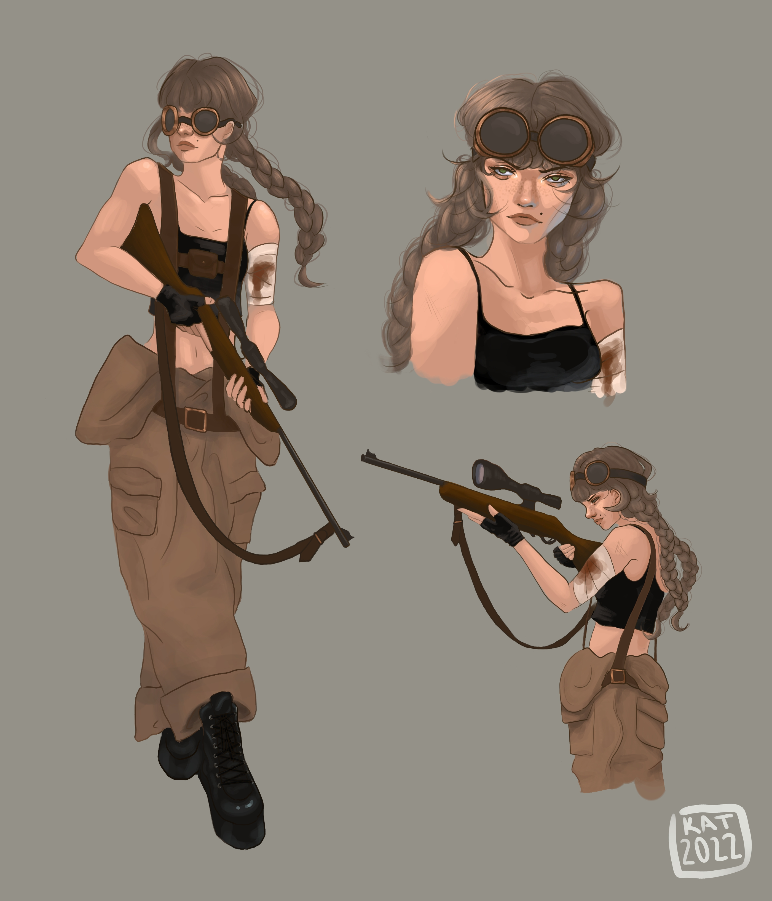

character concept
Medium: Krita
This piece is concept art for a potential character in a video game. I chose this piece because it showcases my creativity and my ability to create stylized characters. She could be part of a Borderlands-style looter shooter, an online First-Person Shooter (FPS), or even a story-driven single-player game. I have always enjoyed the process of designing characters and worlds, and bringing them to life in my art.